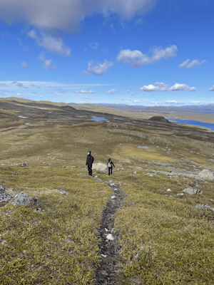

En kort introduktion
En liten bild för att få en mini introduktion för vad som kan hittas på utanför studierna, så detta är när jag tillsammans med min syster och mamma vandrade runt på ett blåsigt fjäll uppe nära gränsen till Norge

The moving international sensation about new beginnings, human connection, and the joy of reading. Hidden in Jimbocho, Tokyo, is a booklover's paradise. On a quiet corner in an old wooden building lies a shop filled with hundreds of second-hand books.
-Days at the Morisaki Bookshop, en bok av Satoshi Yagisawa med Eric Ozawa som engelsk översättare
Min nuvarande läsning
En liten bild för att få en mini introduktion för vad som kan hittas på utanför studierna, så detta är när jag tillsammans med min syster och mamma vandrade runt på ett blåsigt fjäll uppe nära gränsen till Norge
